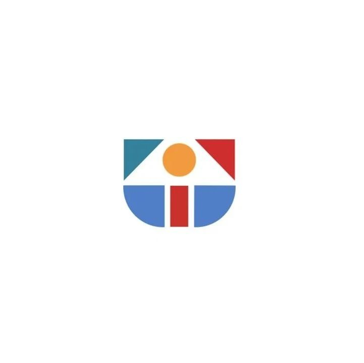

SeeDAO 第二届节点共识大会即将召开
作者: SeeDAO

一、节点资格获取
截至2月15日，钱包地址有效积分总和达到20000SCR、且内SCR总额达20000及以上，且相同地址内持有 SGN 者，均有资格成为本期节点大会节点。扫码查看
⚠️特别说明⚠️
具备节点资格的社区成员需完成节点 SBT Claim，才能成为正式有效节点。节点位于SeeDAO治理体系的顶层，该身份在有效期内拥有提出和参与表决L3提案的权利，并可通过参与治理获得收益。【节点 SBT Claim地址】
https://node.seedao.xyz/
扫码查看
- 在 SeeDAO Discord 身份验证台频道 验证获取“节点S2”身份，获得访问“节点讨论区”的权限。操作流程详见https://seedao.notion.site/Discord-4a7d550c0e5941a2a00cb2f9ff6b9944
扫码查看
长达近4个月的第一季市政厅工作进入收官阶段，各小组交付物均已完成，市政厅内部完成了互评工作，精彩评论速览请所有节点在获得论坛投票权限后，尽快参与市政厅各岗位评估的投票，该投票至2月20日 24:00 UTC+8 关闭，即刻参与，锁定首批第二季治理挖矿激励！https://forum.seedao.xyz/thread/sip-46-42427https://forum.seedao.xyz/thread/sip-47-42428https://forum.seedao.xyz/thread/sip-48-42429https://forum.seedao.xyz/thread/sip-49-42430https://forum.seedao.xyz/thread/sip-50-42431https://forum.seedao.xyz/thread/sip-51-42432https://forum.seedao.xyz/thread/sip-52-42433https://forum.seedao.xyz/thread/sip-53-seeshore-42434提示：SeeDAO第二届市政厅竞选招募详见次条推文